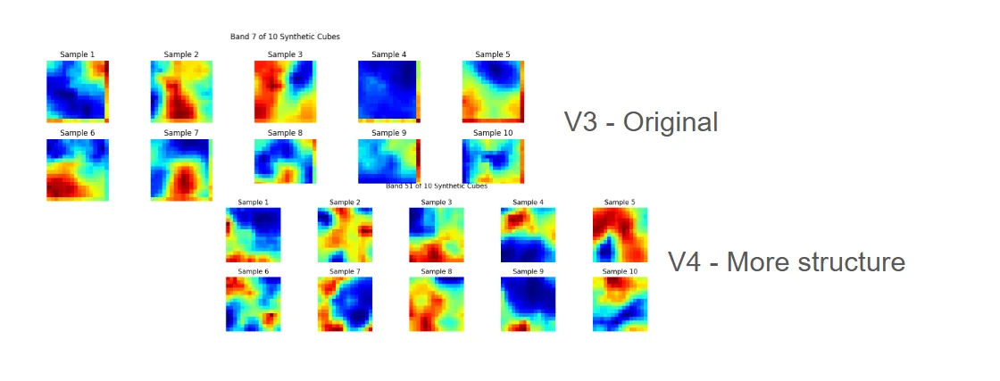
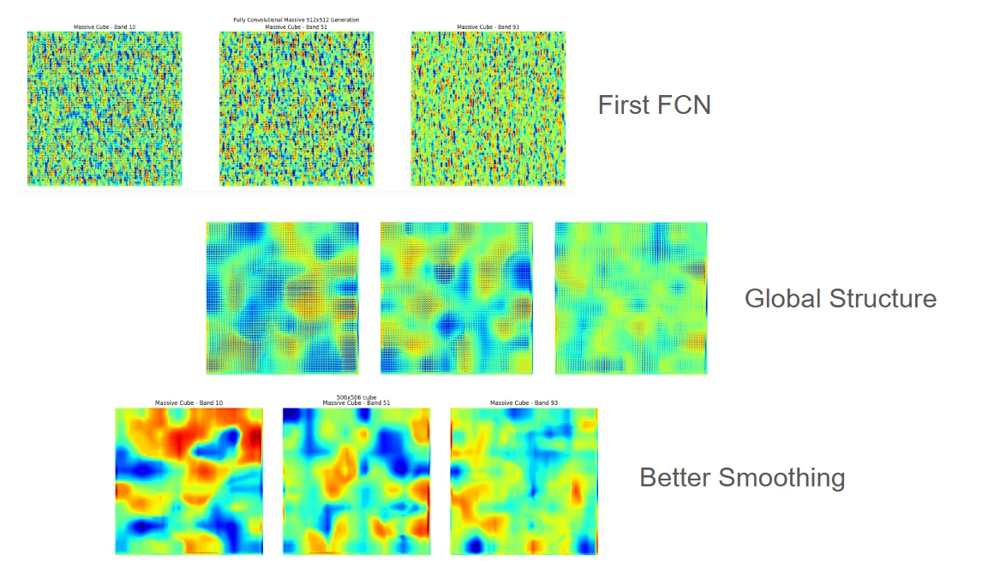
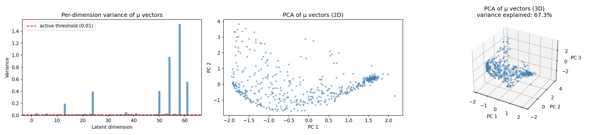

Hyperspectral VAE
Created a Variational Autoencoder for hyperspectral data to generate synthetic data for more training data for UTAT models. The architecture uses a lazy dataset loader so it doesn't need to load in many cropped hyperspectral cubes during the training process. The training process uses MSE and KL Divergence loss functions to ensure a smooth latent space that can be sampled from.
1. Sample Model Outputs from the VAE Model
Using two separate loss functions allowed the model to optimize for two different things: a smooth latent space (done by the KL divergence loss) and accurate recreations (done by the MSE loss function). This allowed me to use a multi-dimensional Gaussian sampling (mapped by the encoder) to generate synthetic hyperspectral data. If I hadn't used the KL divergence, some of the sampled images would have been very accurate, but because the space was not smooth, no sampling would be able to happen.
I created the following models, each with their own improvements from the previous one:
- V3 - This is the first VAE that was able to come up with output. This was more to see if I could get something to generate, and it was only able to create 15 squared images (because that's what the training data included). There are also cropping artifacts that can be seen on the side because of how the model was created incorrectly (improper number of outputs)
- V4 - This got rid of the issue from before with the cropping artifacts. I also used all of the hyperspectral cubes that I had access to (the first one wasonly trained on one hyperspectral cube). I also tuned the MSE and KL divergence loss functions to create images that had a bit more structure, with better sampling methods. (Notice how in V3 sample 4, there is an image that is completely blue, this is caused by the latent space not being completely smooth, or sampled incorrectly). This doesn't show up in the V4 version.
- Fully Connected Network (FCN) - There were a couple updates for this one. This one allowed me to create images of any size. This is done by using a matrix of noise, and then using the V4 model to go through each block of noise to create an image, which is then blurred with the adjacent images. In the first one, the FCN output is extremely disconnected and it looks like a bunch of small images added together. To fix this, I made something to make the noise matrix have global structure, this resulted in something more cohesive (there looks like there is real structure in the image now). Finally, I used some better smoothing algorithms to more or less get rid of the vertical and horizontal artifacts caused by the borders of the cubes.
- Geometric Augmentation: The created chunks undergo 90/180/270-degree rotation, this ensures there is variability in the images that the model is trained ons. This is importantly especially for the FCN, where it needs to learn how to create images in all orientations so everything can fit together cleanly.
- Brilliance Clipping: The top and bottom brilliance percentiles (e.g., 3rd and 97th percentiles) are stripped from the dataset before normalization (0 to 1). When I trained the model without doing this step, the outputs were always clamped between a small range centered around 0.5. Removing the top and bottom brilliance percentiles allowed the model to output brilliance values that stretch from the top to the bottom of the range.
- Mean Squared Error (MSE): Enforces pixel-level accuracy between the reconstructed image and the original hyperspectral chunk.
- Kullback-Leibler (KL) Divergence: Acts as a regularization term to force the aggregated posterior distribution (the resulting variance) to match a standard normal distribution. This ensures the latent space remains smooth. Without this constraint, sampling nearby vectors (e.g., $x + 0.01$) could result in a physically impossible image. (this was an issue with version 1)


2. Model Intent and Pipeline
The model was created for synthetic data generation to create data to train other UTAT models on. For this reason, there is also the requirement of "randomness" or variability in the model so its not just generating the exact same image every single time it is queried.
Autoencoders (AEs) compress data for later reconstruction. Essentially, it takes in an image as input, in a form that typically takes up less space. Then it uses a decoder later on to recreate the image. AEs are more used to find the embedding of an image, rather than creating synthetic data. Variational Autoencoders (VAEs) output a probabilistic mean and variance, which allows for continuous sampling (it is the smoothing of the latent space that ensures the continuous sampling actually results in physically possible information).
Lazy Dataset Loading and Chunking
To prevent out-of-memory (OOM) faults when ingesting hyperspectral imagery, a lazy dataset loader was implemented. It dynamically chunks, rotates, and crops training data into small 15 cubed chunks before feeding it into the encoder.
Preprocessing Methods
Hardware Efficiency
By using the lazy data loader and training the model in small batches, an expensive GPU is not required for training or inference. The lazy data loader also ensures that the model can be trained on basically any amount of RAM.
Encoding the Image
The encoder maps the localized hyperspectral chunks to a multi-dimensional Gaussian distribution (the size of this latent vector is set by the user, it is currently set to 64 which is working pretty well).
Decoding the Image
The decoder takes the 64-dimensional vector and attempts to recreate it as accurately as it can to the original image that was encoded. Depending on how accurate it is, a MSE score is computed.
Sampling
After the encoder has finished learning, a sampler can take the 64-dimensional vectors, use the mean and the variance (one of the vectors has the mean and the other has the variance), to create a completely new vector. If the KL divergence loss did its job, it should be stable and the generated image should be physically possible. Afterwards, this vector is passed into the decoder where the image is reconstructed, and that is the image!
3. Loss Functions Optimization and some Metric Data
Two loss functions were used to ensure the sample space was smooth and the outputs were also accurate.

4. VAE
This is the sequence of files to run to get the VAE from training to sampling.
flowchart TD
A([Step 1: Setup Data]) -->|Place .npy spectral arrays in folder| B(dimension_diagnostics.py)
B -->|Optional: Verify spectral dimensions match| C(FCN_VAE.py)
C -->|Run FCN training -> outputs fcn_vae_bundle.pth| D(fcn_latent_space_diagnostics.py)
D -->|Run analysis -> outputs PCA and GMM plots| E(fcn_latent_space_sampler.py)
C -.->|Alternative: Skip straight to generation| E
E -->|Run sampler -> outputs fcn_synthetic_samples.pt| F(fcn_latent_space_display.py)
F -->|Run visualizer| G([Step 5: View Synthetic Spectra])